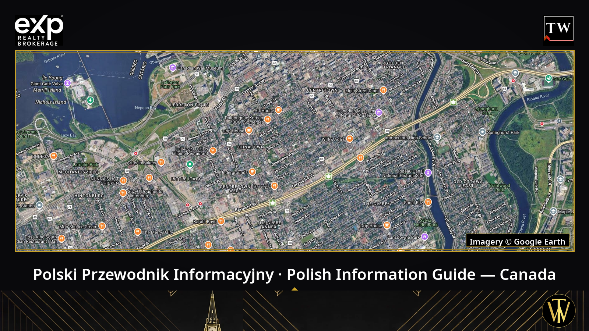
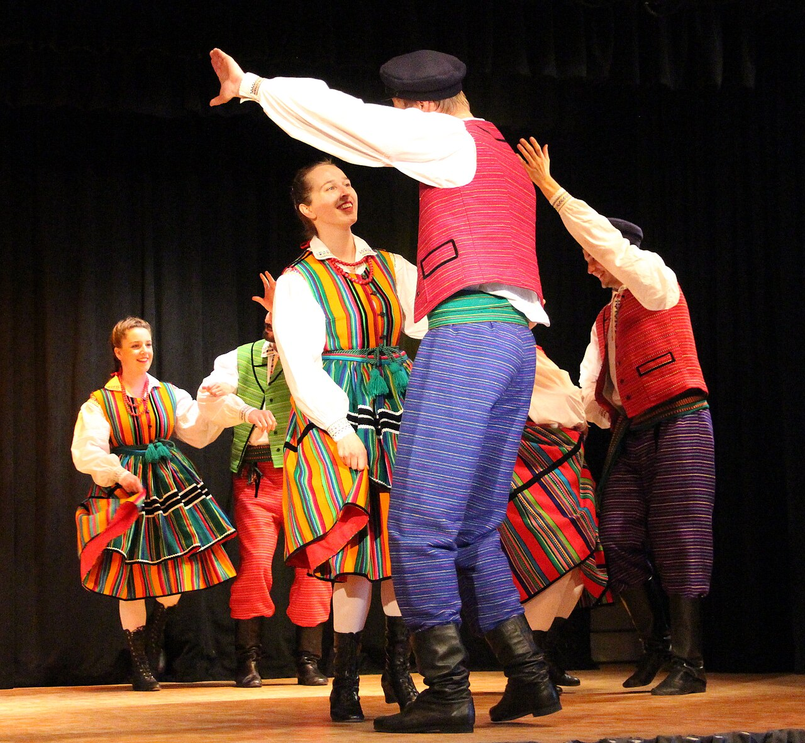
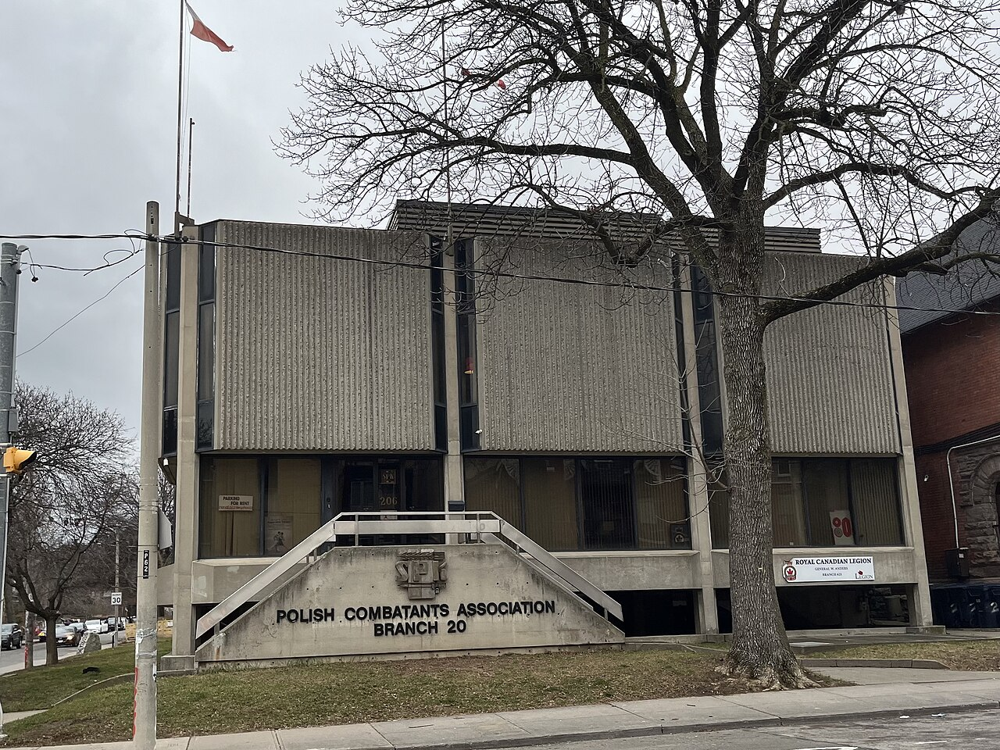
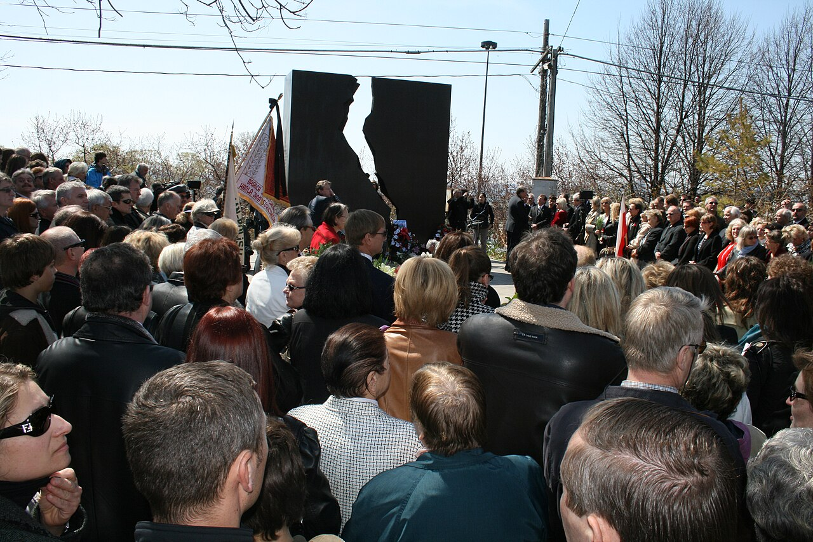

Satellite imagery: © Google Earth
Polish Information Guide in Canada: the associations of Polonia in Ottawa and across the country — what they are, what they do, and how to join them.
I am Tomasz R. Witek, Polski agent w Ottawie (Exp613). Families who ask me about Ottawa houses for sale almost always ask a second question too: where is the Polish community? Where can a child learn Polish, dance in a folk ensemble, or meet other Polish Canadians beyond Sunday Mass? This guide is my answer — a living directory of the institutions Polonia built in Canada and in Ottawa, from the Kashubian settlers who founded Wilno in 1858 to a folk-dance ensemble whose youngest dancers are five years old. For every organization you will find its name, its founding year, what it does, and how to reach it and get involved — drawn only from what the organizations themselves publish.
Where it begins: Wilno, 1858
Organized Polish life in Canada starts in Renfrew County, Ontario. In 1858, Kashubian settlers from northern Poland founded Wilno — Canada's oldest Polish settlement — together with Barry's Bay and Round Lake in the Madawaska Valley. Wilno's St. Mary's parish, founded in 1875, is the oldest Polish parish in Canada, and the twin-spired church on the hill still anchors the community its settlers built.

St. Mary's Church in Wilno, Ontario — the parish of Canada's oldest Polish settlement, founded by Kashubian settlers in 1858. Photo: Hans-Jürgen Hübner, CC BY 3.0, via Wikimedia Commons
From those farm settlements, Polish Canadians built mutual-aid societies, parishes, schools, veterans' associations and community halls in every province. In the 2021 Census, 982,820 people in Canada reported Polish ethnic or cultural origin — alone or together with another origin — and 176,010 reported Polish as their mother tongue. When Canada marked its first Polish Heritage Month in May 2024, the federal Minister of Canadian Heritage spoke of 1.2 million Canadians of Polish descent — a broader measure of descent than the census origin count, and a sign of how deep these roots run.
The national umbrella
Canadian Polish Congress — Kongres Polonii Kanadyjskiej (1944)
The Congress is the umbrella organization of Polish Canada. It was founded at a Toronto conference on September 2–4, 1944, and its roots reach back to the Federation of Polish Societies in Canada, which received its federal charter on February 7, 1933. Today it brings together more than 100 Polish-Canadian organizations, organized in regional districts across the country, with its head office in Toronto. It represents the community before the Government of Canada, presents community awards, and supports youth initiatives such as the Young Polonia Leadership Summit, whose second edition was held in Ottawa. Congress circles led the effort behind Motion M-75, adopted on February 7, 2024, which made May Polish Heritage Month in Canada and May 3 Polish Constitution Day. Its president is Dominik Roszak, and its Regional Director for Eastern Canada is Ottawa's Marek Kiejna.
The Congress's Ottawa district has operated since February 1959 and from the start grouped the capital's Polish organizations: the Canadian Polish Club, the Polish Combatants' Association, the Polish Technicians' Association and its Ladies' Circle, the Polish Canadian Women's Federation, the Polish Institute of Arts and Sciences, the Alliance of Poles in Canada and the Friends of Scouting Circle. The Ottawa district co-created the Polish section of Beechwood Cemetery (2001) and its central monument, inscribed "Polonia Semper Fidelis" and unveiled on November 1, 2007. How to get involved: Congress members are organizations — an association joins the Congress, and individuals take part through member organizations and district events. The Ottawa district publishes its events calendar at kpkottawa.ca, and the national office can be reached through kpk.org and at kongres@kpk.org.
Ottawa's Polish organizations
Polish Combatants' Association, Branch No. 8 — Stowarzyszenie Polskich Kombatantów, Koło nr 8 (1947)
The Polish Combatants' Association (SPK) was founded nationally in 1946 by demobilized soldiers, most of them from General Anders' Polish 2nd Corps, and in 2026 the Association marks 80 years in Canada; its national site is spkcanada.ca. Ottawa's Branch No. 8, founded in 1947, runs Dom Polski SPK at 379 Waverley Street West — the first SPK branch hall in Canada — with an events calendar, two rentable halls and an active Ladies Auxiliary, all published at spkottawa.ca. The branch's regular hours are Wednesday 6:00–10:00 PM, Saturday 6:00–11:00 PM and Sunday 12:00–6:00 PM. Branch No. 8 members founded the Polish School in 1954, and the Polanie dance ensemble is today the Association's youth group. I tell the hall's full story — from the first house on Gladstone Avenue to the Waverley Street West church the branch bought in 1970 — in my companion article on Dom Polski Ottawa and the Polish halls built by soldiers across Canada. How to join: through your local branch — Ottawa's Branch No. 8 publishes its email, spkottawa@rogers.com, and its phone number, (613) 594-5948.
Polanie — Polish Folk Dance Ensemble (1956)
The Polanie dance ensemble was founded in 1956 by Dr. Jerzy Dobrowolski, who led it for its first 25 years. Today Polanie is the youth group of the Polish Combatants' Association in Ottawa and one of the city's calling cards: in recent seasons it counted nearly 60 dancers aged 5 to 46, its instructors trained in Rzeszów, Poland, and its repertoire covers all five Polish national dances. Polanie performs at festivals — including Ottawa Polish Fest — and marks its 70th anniversary in 2026. Its costumes were first worn publicly on May 3, 2015, at the unveiling of the Polish flag at Ottawa City Hall.

Ottawa's Polanie ensemble in costumes from the Opoczno region (April 2019). Photo: MandatoryStudentAccount, CC BY-SA 4.0, via Wikimedia Commons
How to join: in the 2025/2026 season the Senior Youth group (14+) rehearses Mondays, 7:00–9:00 PM at Dom Polski, 379 Waverley Street West, while the Beginner (ages 5–9) and Intermediate (ages 10–13) groups rehearse Saturdays from 12:15 PM at St. Nicholas Adult High School, 893 Admiral Avenue — right after Polish School. The season calendar and details are published at polanie.org, and the ensemble is also on the social channels linked from that site.
Polish Canadian Women's Federation — Federacja Polek w Kanadzie (1956)
The Federation was founded in Toronto in April 1956 by Jadwiga Dobrucka to organize women of Polish origin — supporting immigrant women and carrying on cultural, educational and charitable work. It celebrates its 70th anniversary in 2026, with branches in cities across Canada. Ottawa's Branch No. 8 (Ogniwo Nr 8) was founded on September 11, 1964, at the initiative of Ewa Konopacka. Its landmark achievement was the 1975 campaign that won approval for Polish as a credit course in Ottawa high schools; from that same year the branch has funded a scholarship for Slavic-studies students at the University of Ottawa. The Ottawa branch hosted the Federation's national conventions in 1974, 1986 and 1999 and has represented Polonia in the Ottawa Council of Women since 1965. How to join: through the local branches — federacjapolek.ca links to the branch pages, Ottawa's included.
Polish School in Ottawa — Polska Szkoła im. Wiktora Podoskiego (1954)
The school was founded in May 1954 by members of SPK Branch No. 8 and since 1960 has carried the name of Wiktor Podoski, Poland's first envoy to Canada. It joined Ontario's provincial language program in 1977 and today runs within the Ottawa Catholic School Board's International and Indigenous Languages Program, free for Ontario residents. Classes run Saturdays, 9:30 AM–12:00 PM, at St. Nicholas Adult High School, 893 Admiral Avenue, from junior kindergarten to Grade 12. Its volunteer Parent Council organizes St. Nicholas Day, sleigh rides, pączki sales and Children's Day, and in 2024 the school celebrated its 70th anniversary. How to enrol: registration is through OCSB Continuing Education, and the school runs a contact form for parents at polishschoolottawa.ca.
Oskar Halecki Institute in Canada — Instytut Naukowy im. Oskara Haleckiego (2014)
The Institute is a federally incorporated not-for-profit based in Ottawa. It continues the tradition of the Polish Institute of Arts and Sciences in Canada — the Montreal institute covered later in this guide — and of Ottawa's Polish scholarly circles, active since the 1960s, and takes its name from the historian Oskar Halecki. It organizes symposia, memorial lectures, concerts, poetry evenings and film screenings in Polish, English and French, often together with the Embassy of Poland. Its president is Dr. Aleksander Maciej Jabłoński. How to take part: its lectures and symposia are public events, announced at halecki.org.
Canadian Polish Club — Klub Polsko-Kanadyjski (1936)
The oldest organization in this guide has served Ottawa since 1936 as a non-profit devoted to Polish-Canadian heritage. In November 1944 the Club hosted the "Polska walcząca" (Fighting Poland) photo exhibition, with commentary by Jan Karski, and it still co-organizes events of national scope — in 2025 it joined the Polish Embassy and Kraków's Centre for Documentation of Deportations in presenting "Canada, Land of Refuge" at Library and Archives Canada, marking 85 years since the Soviet deportations and honouring the Polish orphans of Tengeru. About the Club: canadianpolishclub.ca.
Polish Scouting in Ottawa — ZHP (roots 1948–1951)
The first Polish scout troops in Canada were established in 1948–1951 in Montreal, Ottawa and Toronto, and a troop named for Fr. Maksymilian Kolbe once met at St. Hyacinth's parish. ZHP Canada's own structure pages name Ottawa's banner (szczep) "Jutrzenka". Ottawa's Friends of Scouting Circle (KPH), founded in 1964, raised funds for uniforms and camps for decades; after a pause from 1998 to 2016, ZHP's own history of the Circle lists Ottawa as active again. How to join: ZHP Kanada runs units in more than 20 cities and takes inquiries through zhpkanada.org — the route for families asking about current Ottawa units. A second, distinct scouting organization, ZHR, is covered in the networks section below.
At St. Hyacinth Parish
The community's hearth remains St. Hyacinth Parish at 201 LeBreton Street North — I tell its story in my article on Polish parishes across Canada and the Ottawa church built by soldiers. Parish life has carried, across generations, groups such as the Polish Seniors' Association "Ognisko" and a parish library operating since 1954. Parish groups and news: swjacek.ca.
Polish halls and organizations across Canada
The Dom Polski network: veterans' halls from coast to coast
The soldiers of the 2nd Corps built or bought a hall in nearly every city where they settled — the full story, city by city, is in my Dom Polski companion article. The landmarks: in Toronto, SPK Branch No. 20 (founded October 3, 1948) bought a house at 206 Beverley Street on September 15, 1956, renovated it largely with the members' own labour, and opened a purpose-built Polish Combatants' Hall on the site on December 8, 1973 — it remains a busy banquet and community hall (spk20.ca). In Edmonton, SPK Branch No. 6 joined the Polish-Canadian Society and the Polish Veterans Association in a 1959 partnership that built the Polish Hall at 10960 104 Street NW, officially opened in September 1967 (polishhall.ca). In Calgary, the Polish Canadian Association created its Dom Polski — the Polish Canadian Cultural Centre at 3015 15 Street NE — in 1982 (polishcentre.ca). In Montreal, the Polish War Veterans Society bought its house on Prince-Arthur Street on February 11, 1945, for $42,500; after a fire and a 1950 reconstruction it sheltered SPK Branch No. 7, the Congress and a Polish school (weterani.ca). In Winnipeg, SPK Branch No. 13 occupied 1364 Main Street from 1956 and expanded it in 1963–64 to a design by architect Étienne Gaboury; the building has since been sold, but the branch remains a Congress member. In London, SPK Branch No. 2 — formed January 1, 1947, the second branch in Canada — opened its hall in 1960. In Victoria, the White Eagle Polish Association, registered February 10, 1954, runs the White Eagle Polish Hall at 90 Dock Street (victoriapolishhall.com). In Vancouver, the Polish Friendship "Zgoda" Society — founded on September 26, 1926, and marking its centenary in 2026 — built its Dom Polski at 4015 Fraser Street in 1956–1959, still the home of the Polonez folk dance ensemble (polishsocietyvancouver.ca). And in Windsor, the Polish People's Home Association — incorporated November 11, 1925 — opened its Dom Polski at 1275 Langlois Avenue in 1930; in 1941 the building served as Headquarters of the Polish Armed Forces in North America (poloniawindsor.ca).

The veterans' halls anchor Polonia in city after city — pictured, the Toronto home of SPK Branch No. 20. Photo: Daeva Trạc, CC BY-SA 4.0, via Wikimedia Commons
Polish Alliance of Canada — Związek Polaków w Kanadzie (1907)
Canada's oldest Polish organization still at work began in Toronto in 1907 as "Synowie Polski" (Sons of Poland); after a merger on March 6, 1921, it took its present name in October 1924. The Alliance counts some 900 members in 14 local groups across Ontario, and many groups own their halls: Hamilton's Group No. 2 runs the Polish Alliance Hall at 1015 Barton Street East, and Brantford has a Group No. 10 — a different body from Brantford's Mutual Benefit Society, below. National site: polishalliance.ca.
Polish National Union of Canada — Związek Narodowy Polski (a distinct organization)
Not to be confused with the Polish Alliance despite the similar name: the Polish National Union is a separate fraternal and cultural organization, a Congress member with local branches in Toronto, Oshawa, Niagara and Hamilton. Its site is polishnationalunion.ca.
Sokół — Polish Gymnastic Association, Winnipeg
Winnipeg's Polish Gymnastic Association "Sokół" fielded two branches before the Second World War — Branch No. 1 in the North End and Branch No. 2 in St. Boniface, which remains a Congress member today. Its Sokół Hall at 717 Manitoba Avenue, built in 1914, still hosts hall rentals, bingo and the Sokol Polish Folk Ensemble.
Polish National Association, London (1920)
London's Polish National Association was founded on December 12, 1920 — a generation before the veterans arrived — and its community is centred on its hall at 554 Hill Street, with a community presence at poloniabusiness.com. It is a distinct body from London's SPK Branch No. 2.
Brantford's Dom Polski — Polish Mutual Benefit and Friendly Society (1927)
Brantford's society received its charter on February 27, 1927, bought land in 1931 and — with mostly volunteer labour, for some $6,500 — opened its Dom Polski at 154 Pearl Street on November 25, 1934. The Society still runs the hall: brantfordpolishhall.ca.
Polish Institute of Arts and Sciences in Canada — and the Wanda Stachiewicz Polish Library, Montreal (1943)
The Institute was founded in Montreal in 1943 by Professor Oskar Halecki and Wanda Stachiewicz. It began as the Montreal branch of the Polish Institute of Arts and Sciences of America in New York, and since 1976 it has stood as an independent Canadian institution; it was housed at McGill University until 2016. Its library — the Biblioteka Polska — took the name of its founder and longtime director, Wanda Stachiewicz, in 1984, and with more than 50,000 items it is the largest Polish library in the Americas. Institute and library: polishinstitute.org.
The Katyń Memorial, Toronto (1980)
In Toronto's Roncesvalles neighbourhood stands the Katyń Forest Massacre Memorial, unveiled in 1980 in a project spearheaded by the Canadian Polish Congress. It is described as the first Katyń monument erected in a public place anywhere in the world — a measure of how early, and how publicly, Polish Canadians kept wartime memory in Canada.

The Katyń Memorial in Toronto during a commemoration gathering (2010). Photo: Tomasz Piwowarek, CC BY-SA 3.0, via Wikimedia Commons
Foundations and scholarships
Polish Heritage Foundation of Canada — Fundacja Dziedzictwa Polskiego w Kanadzie (1993)
This Ottawa-based registered charity, founded in 1993, supports Polish heritage and young people — it was through the Foundation, for example, that St. Hyacinth parishioners backed Ottawa youth travelling to World Youth Day. It accepts donations and bequests, offers a financial-assistance application, and its most visible undertaking is Ottawa Polish Fest, the community festival held every May — Polish Heritage Month — at the ByWard Market. The Foundation can be reached through phfweb.ca and at fundacja.phf@gmail.com, and it publishes the festival details on its festival page.
Adam Mickiewicz Foundation of Canada (1956)
Founded in 1956 to mark the centenary of the death of the poet Adam Mickiewicz, and incorporated in 1963, the Foundation is a registered charity that awards scholarships to post-secondary students of Polish origin and sponsors cultural and educational initiatives. It is reached at fundmickiewicz@gmail.com and is housed care of SPK Branch No. 20 at 206 Beverley Street in Toronto — the same address as the Polish Combatants' Hall.
W. Reymont Foundation (1970)
Chartered in 1970 under the Polish Alliance of Canada, the W. Reymont Foundation supports and propagates Polish culture in Canada: it grants scholarships to students of Polish origin, organizes literary contests and gives financial help to Polish organizations and schools. It is based in Hamilton, and its site is reymont.ca.
Canadian Polish Millennium Fund (1960)
The Millennium Fund was initiated at a general convention of the Polish community in 1960 and created by Letters Patent in 1964, to commemorate the millennium of Christianity in Poland observed in 1966. It makes grants and awards scholarships to students, schools, organizations and authors: millenniumfund.ca.
Maximilian Kolbe Foundation (1982) — and the John Paul II Polish Cultural Centre
The Maximilian Kolbe Foundation, established in 1982 in Mississauga, operates the John Paul II Polish Cultural Centre at 4300 Cawthra Road — the Centre itself was officially opened later, on September 17, 1994, and is one of the largest Polish cultural venues in the Greater Toronto Area (jp2pcc.ca).
Business, professional and youth networks
Canada-Poland Chamber of Commerce (1994)
The Chamber, based in Toronto and active since 1994, promotes and develops economic, trade and investment contacts between Poland and Canada and networks the business communities of both countries — the natural first call for Polish-Canadian entrepreneurs and for Canadian firms looking toward Poland. Its site is canada-poland.com, and it publishes its email: info@canada-poland.com.
Association of Polish Engineers in Canada — Stowarzyszenie Inżynierów Polskich w Kanadzie (1941)
The Association was founded in 1941 by Polish engineers who had arrived in Canada during the Second World War, and incorporated in 1944; its head office is in Toronto. Ottawa's engineers organized in 1941 as the Polish Technicians' Association, and the national site, polisheng.ca, lists Ottawa among its branches — the route for engineers looking to connect with the local chapter, its technical meetings and its professional network.
Polish Teachers' Association of Canada — Związek Nauczycielstwa Polskiego w Kanadzie (1962)
Founded in 1962 and headquartered in Toronto, the Teachers' Association brings together the educators who staff Canada's Polish Saturday schools, supports Polish-language teaching and publishes the bulletin „Myśl". Its site is znpca.com.
ZHR — Polish Scouts of Canada (1996)
Alongside ZHP, a second Polish scouting organization works in Canada: Związek Harcerstwa Rzeczypospolitej w Kanadzie — the Polish Scouts of Canada (ZHR) — which has existed since 1996 and runs a camp (stanica) on the Ontario Kaszuby near Barry's Bay, the same valley the first Kashubian settlers made home. Its site is zhr-kanada.org.
How to take part
However you arrive — as a newcomer, a parent, a student or a grandparent reconnecting — there is a door in: join a local organization (a combatants' branch, the Women's Federation, the Polish Club, the Alliance or the Union); enrol a child in Saturday Polish school, the Polanie dance ensemble or Polish scouting; attend — lectures at the Halecki Institute, commemorations at Dom Polski, Polish Fest every May, and the events calendars at kpkottawa.ca and spkottawa.ca; volunteer — every group in this guide runs on volunteers; and support the foundations whose scholarships keep the next generation connected. Organizations themselves join the wider family through the Canadian Polish Congress.
Frequently asked questions
What is the oldest Polish organization in Canada?
The Polish Alliance of Canada — Związek Polaków w Kanadzie — founded in Toronto in 1907, is the oldest Polish organization still at work. Organized settlement is older still: Kashubian settlers founded Wilno, Ontario, in 1858.
How do I join a Polish organization in Ottawa?
Start with the local group that fits you: a membership through SPK Branch No. 8 at Dom Polski, the Women's Federation's Ottawa branch, the Canadian Polish Club, or the Polanie ensemble for dancers. Each organization's own website — linked throughout this guide — publishes its route in. The Canadian Polish Congress itself takes organizations, not individuals, as members.
Where can my child learn Polish in Ottawa?
At the Polish School in Ottawa — Polska Szkoła im. Wiktora Podoskiego — which runs Saturday classes, 9:30 AM–12:00 PM, at St. Nicholas Adult High School through the Ottawa Catholic School Board's languages program, free for Ontario residents, from junior kindergarten to Grade 12.
What is Dom Polski in Ottawa, and when is it open?
Dom Polski SPK is the Polish Combatants' hall at 379 Waverley Street West, run by SPK Branch No. 8 since the post-war years. Its regular hours are Wednesday 6:00–10:00 PM, Saturday 6:00–11:00 PM and Sunday 12:00–6:00 PM, and its two halls are rented for weddings and events through spkottawa.ca.
Are there scholarships for students of Polish origin in Canada?
Yes. The Adam Mickiewicz Foundation, the W. Reymont Foundation and the Canadian Polish Millennium Fund all award scholarships to students of Polish origin, the Polish Heritage Foundation supports Polish youth and education in Ottawa, and Ottawa's Women's Federation branch has funded a University of Ottawa Slavic-studies scholarship since 1975.
When is Polish Heritage Month in Canada?
May — with May 3 as Polish Constitution Day — under Motion M-75, adopted by the House of Commons on February 7, 2024. Ottawa marks it with Polish Fest at the ByWard Market, organized by the Polish Heritage Foundation of Canada.
I lead one of these organizations — how do I correct or add to this guide?
Write to me through the contact page below. Send corrections, a description in your own words, photos from your events and your announcements — and if your website can link back to this guide, your members will find the whole community in one place.
A living guide — help us keep it current
This guide is meant to live alongside the community, and its descriptions will be kept up to date. We are writing to every organization in this guide at its published email address, inviting each one to check its own entry. If you lead one of these organizations or belong to one, send us your corrections and additions, a description in your own words, photos from your events and your announcements — and if your website can link back to this guide, your members will find the whole community in one place. The simplest route is the contact page of this website, or me directly — my details are below.
Polonia in Ottawa and across Canada is not only history — it is Saturday school, a Monday-evening dance rehearsal, an academy at Dom Polski and a festival at the ByWard Market. If you are moving to Ottawa, or looking for a home near this community, I am glad to help with that too. And if you are buying or selling, as a polski agent nieruchomości Ottawa — a Polish real estate agent in Ottawa — I invite you to get in touch.
Keep Reading
- The Polish hub: Polski agent nieruchomości w Ottawie
- Polish parishes across Canada and the Ottawa church built by soldiers
- Dom Polski Ottawa and the Polish halls built by soldiers across Canada
- Ten przewodnik po polsku: Polski Przewodnik Informacyjny w Kanadzie
By Tomasz R. Witek (Exp613), Polski agent w Ottawie — based on the websites and publications of the organizations described.
Tomasz R. Witek
Real Estate Agent
eXp Realty, Brokerage
613-314-1199